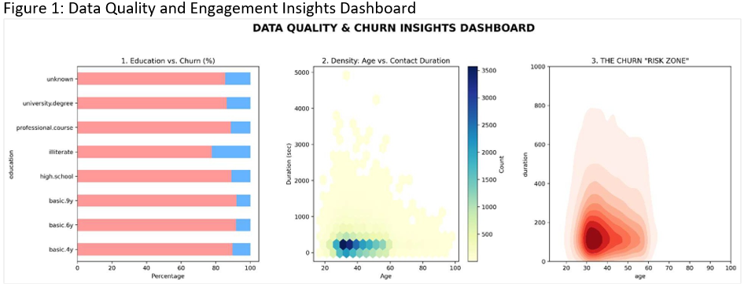
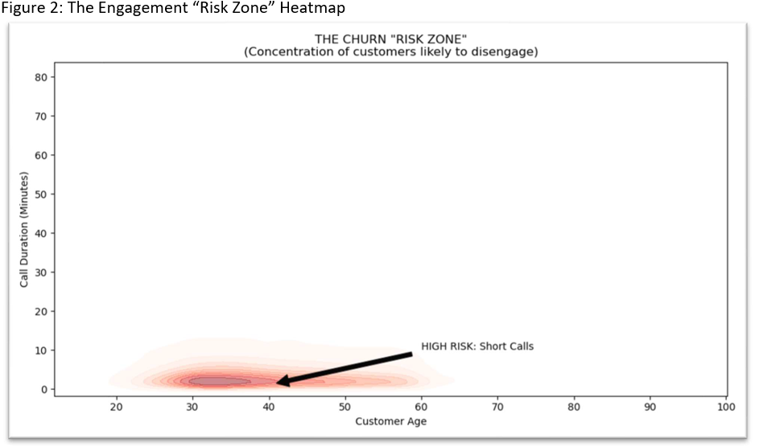

Data science is about transforming raw data into actionable insights that inform better decisions. In this project, I applied my skills in data cleaning, predictive modeling, and data visualization to analyze customer engagement patterns in a banking context. This project demonstrates my ability to preprocess large datasets, construct and validate machine learning pipelines, and create clear, interpretable dashboards. In real-world applications, this work helps businesses identify at-risk customers, optimize resource allocation, and reduce churn—leading to improved efficiency, customer retention, and strategic decision-making. 💡📊🤖🏦
This analysis transforms the UCI Bank Marketing dataset (41,188 records from Portuguese bank telemarketing campaigns, 2008-2010) from a term deposit subscription prediction task into a customer churn prevention framework. By reframing "no" responses as disengagement signals, we identify at-risk customers and provide actionable strategies to shift from inefficient mass calling to targeted retention efforts.
Dashboard: Soft churn visualization

Figure 1: This dashboard visualizes the baseline 88/12 class imbalance and identifies “soft churn” customers through duration analysis. It allows management to see that disengagement is often visible early in the call cycle.
KDE density plot

Figure 2: This KDE density plot highlights the concentration of likely disengagement. Business Action: The dark “Red Zone” identifies customers aged 30-50 with calls under 200 seconds. Representatives should be trained to conclude these low-propensity calls quickly to save resources.
Business Impact 👥: Model achieves 89.1% accuracy and 49.5% precision when targeting top 10% highest-probability customers (vs. 11.3% baseline conversion).
Critical Risk Zone 🛑: Middle-aged customers (30-50) with calls <200 seconds during unfavorable economic conditions.
Key Findings 🔑: Top 10 Churn Drivers include duration (call length), euribor3m, age, nr.employed, campaign, pdays_never_contacted, emp.var.rate, cons.price.idx, cons.conf.idx, pdays.
Core: pandas, scikit-learn, matplotlib, seaborn
Imbalance Handling: imblearn (SMOTE)
Preprocessing: ColumnTransformer, StandardScaler, OneHotEncoder
Models: LogisticRegression, RandomForestClassifier
Evaluation: ROC-AUC, Precision-Recall curves, confusion matrices